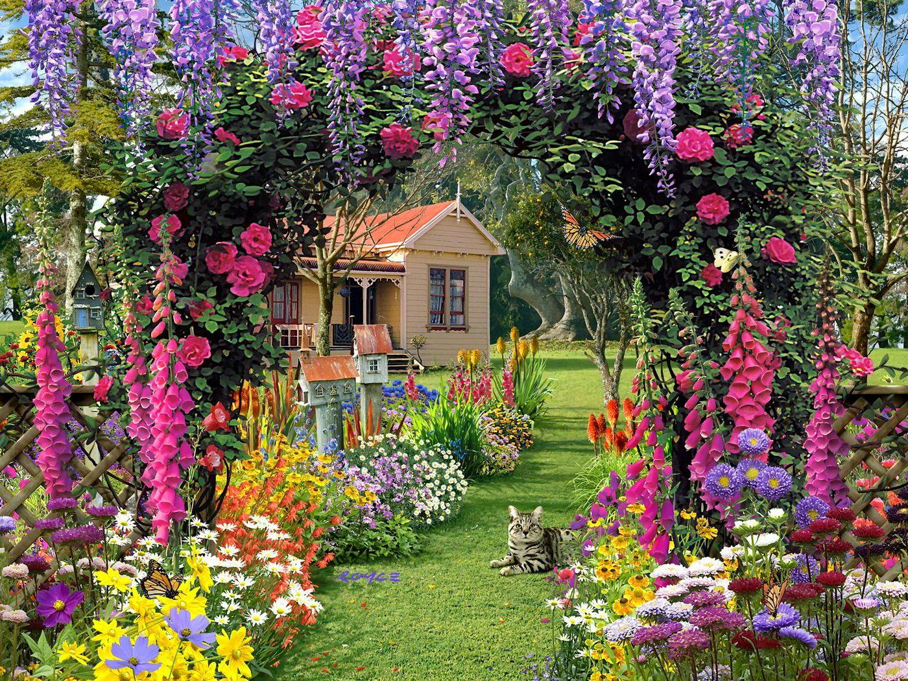
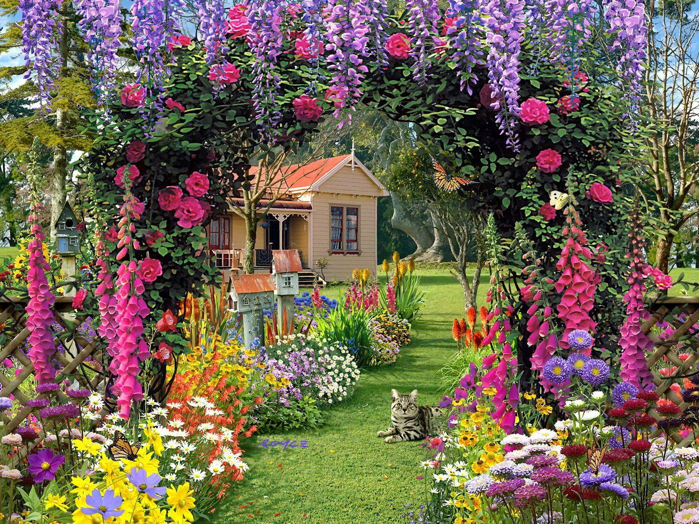
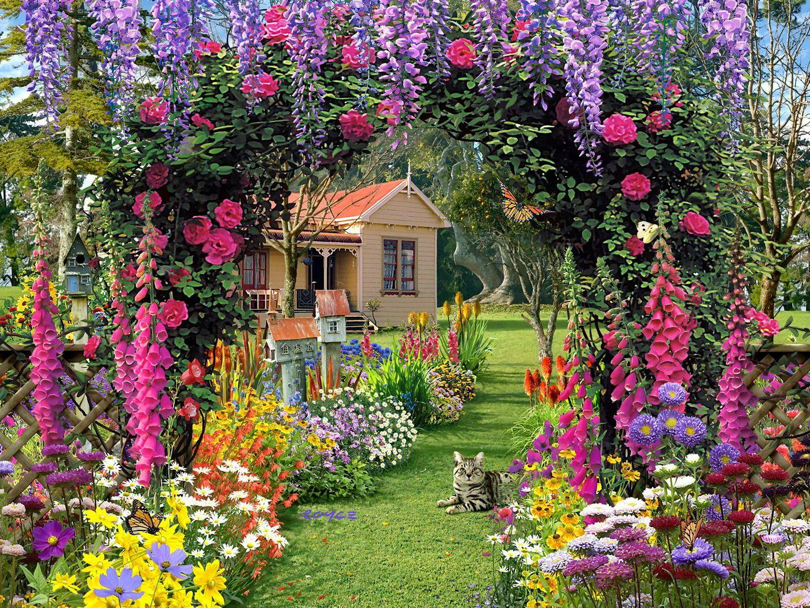
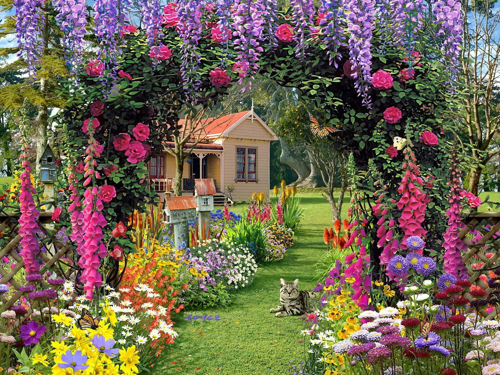

 

TStep into the Floral Garden, where color and fragrance collide to create a beautiful display of seasonal flowers. This garden is a celebration of floral beauty, featuring a vast array of blooms that change with the seasons. From tulips and roses to lilies and daisies, every flower bed is meticulously curated to provide visitors with a delightful visual and aromatic experience. The garden is designed to inspire a love for gardening and a deeper appreciation for the art of landscape design.